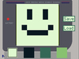
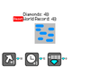

Pugsby's Milkshakes is a game where you can choose what milkshake you want. Not much. but if you are lucky you can get a Secret ending. so try it out! (short description...)
8-Bit Gameboy image maker

This is a game (or picture maker) where you can make a picture with the gameboy color pallete (4 shades of green) this game (or image maker) can also save and load your pictures! so try out 8-bit Gameboy image maker today! and. ITS FREE!!1! NO MONEY BEING SPENT!
Diamond Clicker

Diamond clicker is a Clicker game where you click a diamond to get diamonds, then you buy upgrades to get more diamonds then you can click the diamond more then you can get more upgrades to get more diamonds then you can get MILLIONS of MILLIONS of diamonds by the time your computer time is over (aka in less then 30 minutes or so)